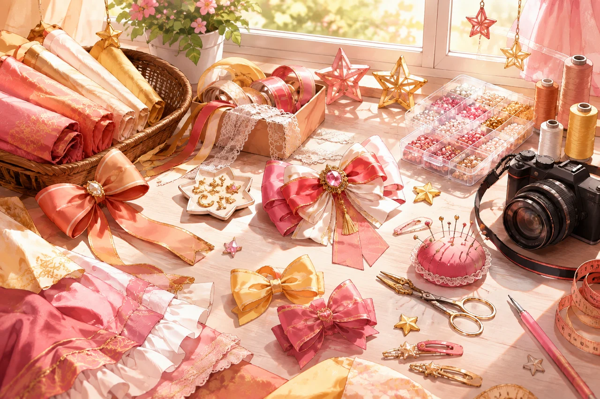

跳转到内容
东云
漫研社
首页
我的收藏
关于东云
入社指南
加入我们
东云漫研社
中国矿业大学（北京） · 你的校园同好现场
喜欢的事，一起做。
各有所爱，来日方长 ✧
首页
话题
收藏
推荐
社团日常
番剧闲聊
二游搭子
Cosplay
绘画创作
宅舞音乐
频道只是兴趣标签，随便逛逛，不用选部门。
东云精选 · 插画占位
东云放映室 · 演示短片
喜欢的事，
都值得按下播放。
不强制分工，不限兴趣。带着喜欢的东西来就好。
播放短片
指南
插画占位
【新同好集合】在东云，喜欢什么就聊什么！
社
东云漫研社 · 社团日常
话题
插画占位
原神 / 星铁 / 鸣潮……你的二游搭子在哪？
社
东云漫研社 · 二游搭子
图集
插画占位
画得怎么样先不管，脑洞一定要先分享！
社
东云漫研社 · 绘画创作
再看一集！
DONGYUN / 一起聊点喜欢的
话题
“只看一集就睡。”然后天亮了。
社
东云漫研社 · 番剧闲聊
同好弹幕墙
示例弹幕 · 你发的仅本页可见
终于找到组织了！
没有分工，只有同好～
这里有玩二游的吗
我推天下第一！
社恐先偷偷探头
前奏响了，DNA动了
( ゜- ゜)つロ 乾杯~
弹幕
0/40
发送
发现同好
喜欢什么，就聊什么
换一换
视频
插画占位
00:16
【东云放映室】把喜欢的事，放进同一段日常
社
东云漫研社 · 社团日常
话题
插画占位
原神 / 星铁 / 鸣潮……你的二游搭子在哪？
社
东云漫研社 · 二游搭子
图集
插画占位
画得怎么样先不管，脑洞一定要先分享！
社
东云漫研社 · 绘画创作
再看一集！
DONGYUN / 一起聊点喜欢的
话题
“只看一集就睡。”然后天亮了。
社
东云漫研社 · 番剧闲聊

图集
插画占位
出片之前的快乐：道具、妆造和一堆小脑洞
社
东云漫研社 · Cosplay
OP 响了， 全员起立。
DONGYUN / 一起聊点喜欢的
话题
前奏只响三秒：这首 OP 我会！
社
东云漫研社 · 宅舞音乐
我推， 值得被看见！
DONGYUN / 一起聊点喜欢的
话题
给你三十秒，安利一下你的本命！
社
东云漫研社 · 番剧闲聊
图集
插画占位
从列表里的头像，变成下课一起走的人
社
东云漫研社 · 社团日常
萌新请进！
DONGYUN / 一起聊点喜欢的
指南
先看这里：关于入社，你可能想问的几个问题
社
东云漫研社 · 社团日常
话题
插画占位
主线先等等，今天只想当个风景党
社
东云漫研社 · 二游搭子
新同好入站指南
慢慢来，先认识一下
入社方式
只追番、玩游戏，不会才艺可以吗？
我很社恐，一个人来会不会尴尬？
加入以后需要选部门、固定分工吗？
什么时候招新？怎么加入？
首页
话题
收藏
关于东云
招新